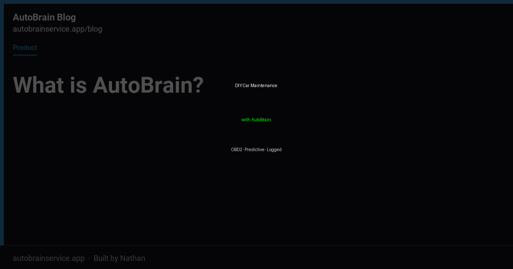
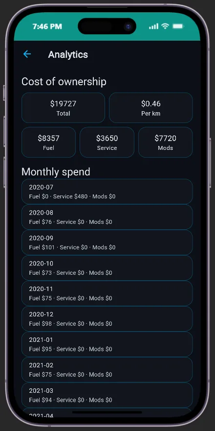
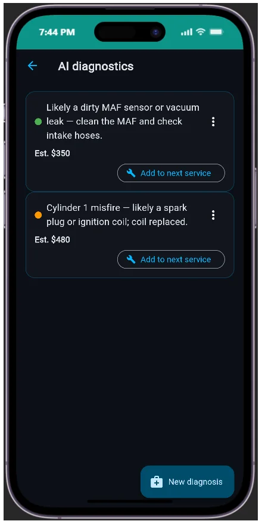
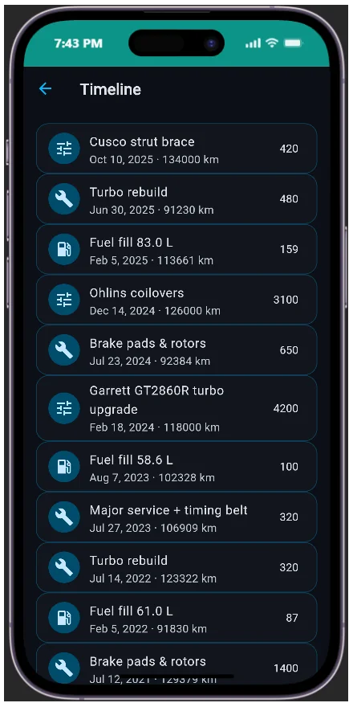
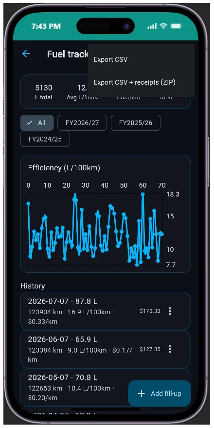

DIY Car Maintenance with AutoBrain: The Complete 2026 Guide
Stop guessing what your car needs. AutoBrain turns every drive into data — OBD2 diagnostics, fuel intelligence, service tracking, and predictive alerts — so you wrench smarter, not harder.

Why DIY maintenance is having a moment in Australia
Australian workshop labour rates hit $180–$250 an hour in 2026. A logbook service on a mainstream SUV can run $600–$1,200. Meanwhile, the parts for an oil change, filter swap, or brake pad replacement often cost 30–50% less if you buy them yourself. The maths is simple: if you have a driveway, a jack, and a Saturday afternoon, you can save thousands a year.
But saving money isn't the only reason owners are picking up tools again. Modern cars generate more data than ever — fault codes, live sensor streams, fuel trims, battery health — and until recently, that data lived behind a paywall at the dealership. AutoBrain changes that. Pair a $30 ELM327 adapter with the app, and you get dealership-level code reading, live data, and AI-powered explanations in plain English.
The three pillars of DIY maintenance with AutoBrain
Effective DIY maintenance rests on three things: knowing what's due, knowing what's wrong, and proving what you did. AutoBrain handles all three.
1. Knowing what's due — predictive, not calendar-based
Most maintenance apps remind you based on time or kilometres since the last service. That's better than nothing, but it's blunt. Your car doesn't degrade on a schedule — it degrades based on how you drive. Short trips in Sydney traffic age oil faster than highway cruising on the Hume. Towing a caravan up the ranges cooks transmission fluid quicker than a daily commute.
AutoBrain's predictive maintenance engine analyses your actual driving patterns, OBD2 live data, and service history to forecast when each component will need attention. It doesn't just say "oil change due in 5,000 km" — it says "based on your 8.2 L/100km average and 65% urban cycles, your oil life is at 22%; plan a change in ~3,800 km".

This means you replace parts when they actually need it — not early (wasting money) and not late (risking damage). For DIYers, it also means you can batch jobs efficiently: if the predictive model says front brakes and coolant are both due within 2,000 km, you order parts once and do both in one session.
2. Knowing what's wrong — OBD2 diagnostics in your pocket
The check engine light is the universal symbol of automotive anxiety. Most drivers either ignore it (hoping it goes away) or pay $150+ for a "diagnostic scan" that reads a single code. With AutoBrain and any ELM327 adapter, you read codes yourself — as many times as you want, for free.
But a code is not a diagnosis. P0420 means "catalyst efficiency below threshold" — but the root cause could be a lazy oxygen sensor, an exhaust leak, a fuelling issue, or a genuinely dead cat. AutoBrain's AI diagnostics takes the code (or your symptom description: "rough idle when cold", "hesitation at 3,000 rpm") and returns:
- Likely causes ranked by probability
- Severity — drive cautiously, book this week, or stop now
- Parts involved with Australian pricing context
- Cost estimate for DIY vs independent vs dealer

This is where DIYers save the most money. Knowing what to replace — and what not to — prevents the classic "throw parts at it until the light goes out" approach that burns hundreds on sensors that were never faulty.
Pro tip: Read our OBD2 Adapter Buying Guide Australia 2026 before purchasing. Cheap clones often drop Bluetooth mid-scan or misread manufacturer-specific codes. A quality VGate or OBDLink adapter costs $60–$120 and lasts years.
3. Proving what you did — the audit-ready logbook
DIY maintenance only saves money if it's documented. Undocumented work hurts resale, voids warranty claims, and makes the ATO ask uncomfortable questions at tax time. AutoBrain's timeline and logbook turn every job into a permanent, exportable record.
When you change your oil, you log it: date, odometer, oil grade, filter part number, litres used, cost. Snap the receipt — AutoBrain's receipt scanner OCRs the line items and auto-fills the service entry. Add photos of the old filter, the drain plug torque, the oil fill cap. The result is a service record that looks like it came from a workshop — because the data quality is the same.

At resale, you export the full history as a PDF or CSV — every service, every fill-up, every fault code cleared, every modification. Buyers pay a premium for documented care. At tax time, the ATO-compliant logbook exports trips and expenses aligned to the Australian financial year. At warranty claims, you show the manufacturer exactly when and how you serviced the car.
Essential DIY jobs AutoBrain helps you nail
Oil and filter changes
The bread and butter of DIY maintenance. AutoBrain tracks your oil life by analysing fuel consumption, trip profiles, and engine load from OBD2 data. When you do the change, log the exact oil spec (e.g., 5W-30 API SP / ACEA C3), filter part number, and litres. The timeline builds a pattern — if consumption creeps up, you'll see it before the low-oil light.
Cost comparison 2026: Dealer $180–$350 | Independent $120–$220 | DIY parts $55–$95 (5L synthetic + filter)
Brake pads and rotors
Brake wear is predictable — but only if you measure it. AutoBrain doesn't have a brake pad sensor (yet), but it tracks your driving: hard stops per km, average speed, vehicle weight. Combined with your logged pad changes, it estimates remaining life. When you do the job, log rotor thickness, pad compound, and whether you machined or replaced rotors.
Read our Brake Pad Replacement Cost Australia 2026 guide for current pricing and a step-by-step walkthrough.
Cost comparison 2026: Dealer $450–$900/axle | Independent $300–$550/axle | DIY parts $120–$280/axle (pads + rotors)
Battery replacement
Modern start-stop and AGM batteries need registration (BMS reset) after replacement. AutoBrain's diagnostics can read battery health (state of charge, state of health, cycle count) via OBD2 on supported vehicles. When you swap the battery, log the new battery's specs, date, and the BMS reset confirmation. The Car Battery Replacement Cost Australia 2026 guide covers AGM vs lithium, DIY vs fitted pricing, and which cars need dealer coding.
Cost comparison 2026: Dealer $380–$650 (AGM, coded) | Independent $280–$450 | DIY parts $180–$350 (AGM) + $0–$50 for BMS tool
Air and cabin filters
The easiest DIY job with the highest ROI. A clogged engine air filter costs you 5–10% fuel economy. A dirty cabin filter makes the HVAC work harder and smells musty. AutoBrain's fuel tracking flags economy drops that often trace back to a dirty air filter. Log the change, note the part numbers, and the next filter swap is a one-click reorder from your parts inventory.
Cost comparison 2026: Dealer $80–$150 | Independent $50–$100 | DIY parts $25–$60
Coolant flush and thermostat
Overheating kills engines fast. AutoBrain monitors coolant temperature via OBD2 live data — if you see the gauge sitting higher than normal, or the electric fan cycling more often, log it. A coolant flush every 5 years or 100,000 km (whichever comes first) is cheap insurance. Log the coolant type (OAT, HOAT, Si-OAT — never mix), capacity, and whether you replaced the thermostat while you were there.
Cost comparison 2026: Dealer $250–$450 | Independent $180–$300 | DIY parts $60–$120 (coolant + thermostat)
Transmission and diff oil
Often overlooked until it whines. AutoBrain doesn't read transmission temp on all cars, but if yours supports it, the live data screen shows it. Log every fluid change with the exact spec (e.g., ATF WS, DCTF, GL-5 75W-90) — using the wrong fluid destroys gearboxes. The Cheap Car Servicing Australia 2026 Without Shortcuts guide has a fluid specification cheat sheet.
Building your DIY maintenance workflow with AutoBrain
Step 1: Add your vehicle with rego lookup
Enter your Australian plate and state — AutoBrain auto-fills VIN, make, model, year, engine, and transmission. This ensures every prediction, code lookup, and fluid spec is correct for your exact car, not a generic model range.
Step 2: Pair an OBD2 adapter
Plug a Bluetooth ELM327 adapter into the OBD2 port (under the dash, usually left of the steering column). Pair in AutoBrain's diagnostics screen — one tap. Now every drive streams live data: RPM, coolant temp, fuel trims, O2 sensor voltages, battery voltage, and hundreds of manufacturer-specific PIDs.
Step 3: Log your baseline
Before you start DIYing, log what you know: last service date, odometer, what was done, receipts if you have them. Use the receipt scanner to bulk-import old invoices — OCR pulls date, odometer, line items, and cost automatically.
Step 4: Let predictive maintenance build your schedule
Drive for a week or two. AutoBrain learns your patterns and surfaces a prioritised maintenance queue: "Front brake pads ~4,200 km", "Coolant flush due by March 2027", "Battery health 68% — test before winter". No guesswork.
Step 5: Do the work, log the proof
When a job comes due, you have the parts list, the cost estimate, and the procedure context (linked from our blog guides). Do the work. Snap the receipts. Log the service with photos, part numbers, torque specs, and any observations ("rotor lip 1.2 mm", "old oil unusually dark"). The timeline entry is now a professional-grade record.
Step 6: Review analytics quarterly
The analytics screen shows total spend, cost per km, fuel trend, and a 12-month forecast. If cost/km spikes, dig into the timeline — usually a single expensive job or a developing issue (fuel economy dropping = check air filter, spark plugs, tyre pressure, O2 sensors).
Advanced DIY: using live data for condition-based maintenance
Calendar-based maintenance ("every 10,000 km") is safe but wasteful. Condition-based maintenance ("when the data says so") is optimal — and AutoBrain puts the data in your hands.
Fuel trims: the early warning system
Short-term fuel trim (STFT) and long-term fuel trim (LTFT) tell you how much the ECU is correcting the fuel mixture. STFT bouncing ±5% is normal. LTFT creeping past ±10% means something's drifting — vacuum leak, dirty MAF, failing injector, weak fuel pump. AutoBrain's live data screen graphs these in real time. Log a baseline when the car runs perfectly; any deviation is a clue.
Oxygen sensor health
Pre-cat O2 sensors should switch rich/lean rapidly (0.1–0.9 V, several times per second). A lazy sensor (slow switching, stuck mid-range) kills fuel economy and cat life. Post-cat sensors should be steady (~0.45–0.6 V). AutoBrain graphs both. If you see a pre-cat sensor getting sluggish, order the replacement before the code sets.
Battery and charging system
Resting voltage should be 12.6 V+. Cranking should stay above 10 V. Running should be 13.8–14.4 V (varies by smart-charging strategy). AutoBrain logs voltage on every drive. A slow decline over weeks = alternator or battery on the way out. Replace on your schedule, not when the car strands you.
Transmission temperature
On supported vehicles, AutoBrain shows transmission fluid temp. If it runs 10–15°C hotter than baseline under the same conditions, the fluid is breaking down or the cooler is restricted. Flush before it cooks the valve body.
Common DIY mistakes AutoBrain helps you avoid
| Mistake | How AutoBrain helps |
|---|---|
| Using wrong oil spec | Vehicle profile stores exact spec; timeline shows what you used last time |
| Forgetting to reset service interval | OBD2 diagnostics can reset service lights on supported cars |
| Overtorquing / undertorquing | Log torque specs in service notes; parts inventory tracks torque wrench calibrations |
| Buying wrong parts | VIN lookup + parts inventory = exact part numbers every time |
| Missing the real problem | AI diagnostics ranks root causes, not just codes |
| No proof for buyer/warranty/ATO | Exportable timeline with receipts, photos, OBD logs |
| Skipping "minor" items | Predictive queue surfaces everything by true urgency |
What about the jobs you shouldn't DIY?
AutoBrain makes you a better DIYer — it doesn't make you a qualified mechanic. Some jobs need a lift, specialist tools, or safety certification:
- Airbag / SRS work — one mistake deploys or disables the system
- Brake line / ABS module replacement — requires proper bleeding equipment and safety validation
- Suspension geometry / wheel alignment — needs alignment rack
- Timing belt / chain on interference engines — catastrophic if wrong
- Refrigerant / A/C work — licensed refrigerant handling required in Australia
- ECU programming / security coding — dealer or specialist tooling
For these, use AutoBrain to diagnose first, then walk into the workshop with the code, the likely cause, and the cost estimate. You'll spot unnecessary upsells instantly. Our Finding a Mechanic in Australia guide helps you choose a workshop that respects an informed customer.
Case study: the $2,300 saving on a 2017 Mazda CX-5
Sarah, an AutoBrain user in Brisbane, got a check engine light on her 2017 CX-5 diesel. Dealer quoted $2,300 for "DPF replacement + forced regeneration + diagnostics". She plugged in her OBDLink adapter, opened AutoBrain, and got code P2463 (DPF restriction). AI diagnostics showed:
- 70% probability: DPF clogged from urban short-tripping — try forced regen first
- 20% probability: Differential pressure sensor faulty — $85 part
- 10% probability: DPF genuinely failed — $1,800+ part
She drove 30 minutes on the highway at 100 km/h (manual regen trigger), cleared the code, and monitored soot load via live data. It dropped from 92% to 18%. Code never returned. Total cost: $0. The dealer's quote assumed the worst case. AutoBrain's data let her test the cheap fix first.
She logged the episode in AutoBrain — code, live data screenshots, highway regen, result. If the DPF does eventually fail, she has proof it wasn't neglect.
Fuel tracking: the hidden maintenance sensor
Most DIYers track fuel to save money at the bowser. But fuel economy is the most sensitive early-warning sensor your car has. A 10% drop in L/100km often precedes a check engine light by weeks or months. Causes, in order of frequency:
- Dirty air filter (5–10% drop)
- Under-inflated tyres (3–5% drop)
- Worn spark plugs / ignition coils (5–15% drop)
- Dragging brake caliper (5–8% drop)
- O2 sensor degrading (5–12% drop)
- Fuel injector leak / carbon build-up (8–20% drop)
- Transmission fluid breakdown / torque converter slip (5–15% drop)
AutoBrain's fuel intelligence calculates your real L/100km from every fill-up (not the trip computer's optimistic estimate), tracks cost per kilometre, and flags anomalies. The Fuel Consumption Australia — Real-World Guide vs Official Figures 2026 post explains why your real number matters more than the ADR sticker.

Modifications: track the build, know the value
DIY maintenance often bleeds into modifications — better brakes, suspension, intake, tune. AutoBrain's modifications tracker is your build sheet: every mod with photos, cost, date, and AI impact estimates (power, economy, reliability, resale). At resale, the modification export with images proves what was done and what it cost — buyers pay for documented builds.
Read How to Use AutoBrain: A Guided Tour of the App for a full walkthrough of the mods screen and every other feature.
Community Garage: ask, learn, share
DIY doesn't mean alone. AutoBrain's Community Garage connects you with owners of the same car. Post a question ("anyone done front lower control arms on a 2015 Forester?"), search past issues, share your write-ups. The Issues Blog inside Community Garage is a searchable knowledge base of real problems and real fixes from Australian owners.
Your DIY maintenance starter kit
If you're starting from zero, here's what you need — all available from Australian retailers:
- OBD2 adapter: VGate iCar Pro Bluetooth 4.0 ($89) or OBDLink MX+ ($179) — read our buying guide first
- AutoBrain app: Free tier covers one vehicle, full diagnostics, fuel, timeline — try the live demo
- Basic tools: Socket set (metric), torque wrench (1/2" drive, 40–200 Nm), jack + axle stands, drain pan, funnel
- Fluids reference: Bookmark our Cheap Car Servicing guide for spec sheets
- Parts sources: Repco, Supercheap, Burson, eBay Australia, RockAuto (ships to AU) — log part numbers in AutoBrain's parts inventory for one-click reorders
Frequently asked questions
Can AutoBrain help with DIY car maintenance?
Yes. AutoBrain tracks every service you do yourself, monitors fuel economy for early warning signs, reads OBD2 fault codes in plain English, and predicts upcoming maintenance based on your actual driving — not just the book schedule.
What OBD2 adapter works with AutoBrain?
Any ELM327-based Bluetooth or WiFi adapter works with AutoBrain. For Australian buyers, we recommend the OBD2 Adapter Buying Guide Australia 2026 on our blog to avoid common clones that drop connections or misread codes.
Does AutoBrain replace a mechanic?
No — it makes you a better-informed customer. AutoBrain tells you what the car is reporting, what it likely means, and what it might cost. You still need a workshop for lifts, specialist tools, and safety-critical work. But you'll never walk into a workshop blind again.
Is my DIY service history valid for warranty or resale?
Yes, provided you keep receipts for parts and fluids and log the work properly. AutoBrain's receipt scanner extracts line items from photos, and the timeline exports a complete, dated history — exactly what buyers and warranty assessors want to see.
How does AutoBrain's predictive maintenance work?
It analyses your real driving data (trip profiles, fuel consumption, OBD2 live parameters) alongside your service history to forecast when each component will need attention — more accurately than fixed time/km intervals.
Can I use AutoBrain for multiple vehicles?
Yes. The Enthusiast plan ($5.90/mo) covers 3 vehicles, Garage plan ($11.90/mo) covers 10. Self-hosted is unlimited. Each vehicle gets its own timeline, predictions, fuel tracking, and diagnostics.
Start wrenching smarter today
DIY car maintenance in 2026 isn't about saving a few dollars on an oil change — it's about owning your vehicle's data so every decision is informed, every dollar is justified, and every kilometre is documented.
AutoBrain gives you the diagnostic capability that used to require a $5,000 scan tool, the predictive intelligence that used to require a fleet analyst, and the record-keeping that used to require a disciplined spreadsheet habit — all in an app that works even when the AI is down.